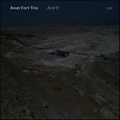
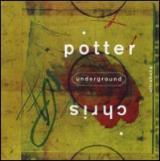
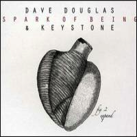
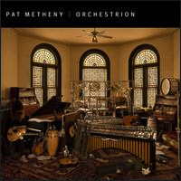
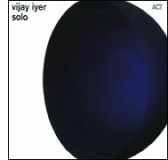
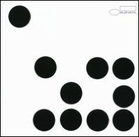

New Releases
Anat Fort - And If
Anat Fort's second project for ECM follows along the spiritual and meditative lines of her first recording A Long Story. Here the pianist from Israel uses shorter, thematic forms that glide gently toward their conclusions, beautifully flowered, and crafted with light colors. This is just a trio effort, which contrasts from the previous date that featured clarinetist Perry Robinson, drummer Paul Motian, and bassist Ed Schuller. Here Fort, Gary Wang (bass), and Roland Schneider (drums) weave their way through relatively concise original compositions with serenity firmly in place. That's not to say Fort is completely averse to energy or aggressive themes, digging in to the funky, quirky "Nu." Typical during the circular, minimalist waltz "Some," or the wafting then flowing "Clouds Moving," Fort's piano tends to lean toward lovely, passive phrasings that envelop the heart. Hymn-like and folk-oriented sounds are also heard, including tributes to Motian and the U.S. state of Minnesota. And If suggests Fort's roots in her native Middle East are merging toward American influences with increasing depth.
Chris Potter Underground - Ultrahang
Chris Potter's Underground have stayed the course over five years, proving to be a very compelling electric-oriented funky jazz band with a big twist. Since the recording South that Potter did with fellow saxophonist David Binney, the jagged, angular, zig-zag-type melodies that Potter has composed stand him head and shoulders above all of his peers in modern music. Retaining electric keyboardist Craig Taborn and electric guitarist Adam Rogers, Potter works with them because they are able to keep pace with his lightning-quick lines and interval-leaping concepts without even a glimpse of a misstep. Drummer Nate Smith plays unorthodox grooves in odd meters to add further complexity that never sounds disjointed or haphazard. Potter's incredible vision of what jazz can be starts with the spare beat and sax in bizarro world via the pronounced guitar of Rogers stewed in a New Orleans-type shuffle on the title track; adds shout-out choruses in a 5/4 rock beat with many unison sax/guitar lines during "Time's Arrow"; and works out a chunky, funky dissolution in mixed odd meters for "Small Wonder." The bluesy, slanted, complex, and extended-cycle melodies melting into sky-soaring concepts most closely reflect the Binney effect on "Facing East." A loose jam stomp-down identifies "Boots"; a harder beat in Headhunters/Funkadelic terrain with no bass -- though it seems Taborn assimilates that role -- cements the band as "Rumples" gets down; and Potter moves to bass clarinet for the thinly veiled cover of Bob Dylan's "It Ain't Me, Babe." On this recording, Rogers is far more steel-cased, rip-roaring, and on fire than his previous efforts, playing many tandem lines with the leader. Taborn languishes in the background, yet cleverly plays a role that expands the rhythmic content of the group. Potter has been at the forefront of progressive and contemporary jazz since the founding of this ensemble, one that all younger listeners should champion, and deserves high marks in the annals of new jazz as presenting one of the more innovative approaches in the decade of the 2000s. Ultrahang comes highly recommended.
Dave Douglas and Keystone - Spark of Being
On June 22 of 2010, Dave Douglas and Keystone (his electric group) issued their soundtrack to experimental filmmaker Bill Morrison's Spark of Being. The film, a meditation on humanity and its relationship to technology, used Mary Shelley's Frankenstein as its muse. It was comprised of new, archival, and distressed footage. Douglas has always been interested in science's relationship to the natural world, and human life was a perfect collaborator. The resulting soundtrack was beautifully constructed to underscore the images; like all soundtracks, however, the music was confined by them as well. Spark of Bering: Expand is the second part in this trilogy. It focuses on and experiments with themes from some of the original compositions, but is not bound by them. They are intricately related, but also provide additional depth of field in sonic, textural, and dynamic ideas for Keystone -- Douglas, laptop and trumpet; Marcus Strickland, tenor saxophone; Adam Benjamin, Rhodes; Brad Jones, Ampeg Baby Bass; drummer Gene Lake; and DJ Olive on turntables and laptop -- and their nearly boundless creativity and curiosity. These seven tunes were recorded in Standford University's Center for Computer Research in Music and Acoustics. The location and even the theme may sound clinical; the music is anything but. It is adventurous in its use of electronics, but never compromises Douglas' compositional gifts or his innate dedication to jazz improvisation. "Spark of Being" is a wonderfully subdued tune that uses lyric melody from modal blues and employs the use of ambient sounds from laptop-generated sources as well as Rhodes piano. "Creature" is warm but improvisationally stretches wide, as piano, tenor, and muted trumpet work out an elaborate melody line, heightened dimensionally by the sounds of gulls, dolphins, and other animals. "Tree Ring Circus" is a funkier number that, despite its use of the popping Baby Bass line, distorted Rhodes, and latop harmonics, features a stellar contrapuntal melodic investigation by Douglas and Strickland. "Observer" and "Travelogue" are likewise more synthetic, but the horns keep them firmly inside the jazz idiom underscored by funky breaks and basslines. In sum, Spark of Being: Expand isn't just a worthy successor to the soundtrack. It is a superior album. It makes use of all of Douglas' and Keystone's sophisticated gifts provocatively yet soulfully.
Pat Metheny - Orchestrion
Pat Metheny’s Orchestrion refers to a 19th century hybrid musical instrument of the same name that contained (usually) a wind orchestra, various percussion instruments, and sometimes a piano played by a pinned cylinder or a music roll -- like a player piano. Metheny designed and plays one here thanks to a commissioned group of inventors, advanced solenoid switch technology, and pneumatics. This invention includes pianos, marimbas, bells, basses, “guitarbots,” percussion, cymbals, drums, loads of tuned bottles, and synth and fabricated acoustic instruments, played by Metheny triggering everything with his guitar. While it may have been simpler using a laptop with the latest sampling and MIDI technology, he explains in the booklet that the “acoustoelectric” sound and the “human element” he sought would have been impossible to achieve. Here, his extensively written compositions are a complete engagement with his trademark harmonic and lyric investigations and improvisations. Despite mechanics, everything here sounds and feels organic. Drums and percussion instruments swing, basslines flow in concert with and counterpoint to his guitar and piano lines. These five cuts showcase different sides of Metheny’s compositional acumen and poetic sense of detail without losing his euphoric, spacious sense of complex harmonic engagement or songlike melodic sensibilities.
Vijay Iyer - Solo
Vijay Iyer's first solo album seems structured in three movements, not unlike a recital. It begins with four interpretations--the pop song "Human Nature," which was imported into jazz by Miles Davis in 1985; Thelonious Monk's "Epistrophy"; the standard "Darn That Dream"; and Duke Ellington's "Black and Tan Fantasy." These are followed by four interlocking Iyer compositions, which are in turn succeeded by the album's third movement, a stretch that includes a version of (Iyer's former boss and mentor) Steve Coleman's "Games," another Ellington track ("Fleurette Africaine") and one final original--"One for Blount," a dedication to Sun Ra. The opening version of "Human Nature" dips into Bruce Hornsby territory in its final 90 seconds or so, and tosses in a few unnecessary fills, but otherwise it's nice enough. Iyer tackles "Epistrophy" with high-speed, Jarrett-esque streams of notes rather than the obvious, Monkish lurching rhythm and melodic sparseness. The melody's present, but it's buried; you've got to know it's there in advance and listen for it. "Darn That Dream" is pretty but undistinguished, while Iyer's version of "Black and Tan Fantasy" struts and strides convincingly, making the listener wish he'd approached the Monk tune in a similar fashion. The four-song suite of original material that comprises the album's middle stretch showcases other facets of Iyer's playing, including a passable Cecil Taylor impression on the rumbling "Prelude: Heartpiece" and "Autoscopy." The latter piece shifts to Philip Glass-like repetitive figures in its second half, which is also nice. The odds and ends that close the disc out don't resolve anything, though "Games" has a melody Iyer clearly enjoys playing; they just provide structure to the album as a whole. He can clearly make a piano do just about anything he wants it to, and Solo is a project that puts the thought that went into its construction right up in your face, but it's never breathtaking in the way a truly great solo piano performance can be.
Jason Moran - Ten
Jason Moran's 2010 effort Ten features more of the jazz pianist's smart and forward-thinking jazz. Backed by bassist Tarus Mateen and drummer Nasheet Waits, Moran reveals himself once again to be a nimble improviser with an ear toward atmospheric and often fractured hypnotic post-bop jazz on tracks like the lilting "Blue Blocks" (commissioned by the Philadelphia Museum of Art) and "RFK in the Land of Apartheid," along with ruminative numbers buoyed by the band's laid-back blues inflections and ever-so-subtle funk grooves. Other tracks, such as "Feedback Pt. 2" and "Old Babies," reveal Moran's more experimental edge, mixing sound effects and his son's voices with more straight-ahead jazz stylings that bring to mind both Thelonious Monk and Oscar Peterson. As always with Moran, there is a heavy classical influence, and compositions like his own "Pas de Deux -- Lines Ballet" and his rambunctious take on Leonard Bernstein's "Big Stuff" do evince, much like the rest of Ten, both a romantic and modernist point of view.